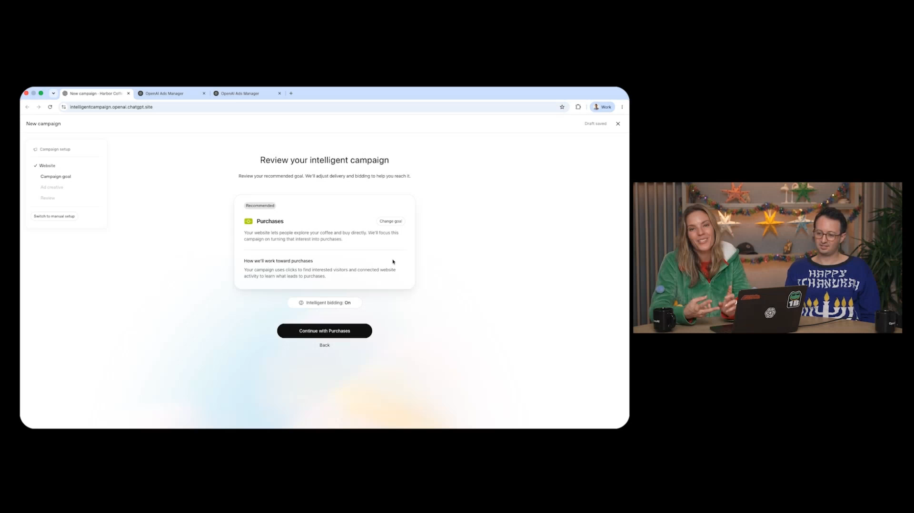
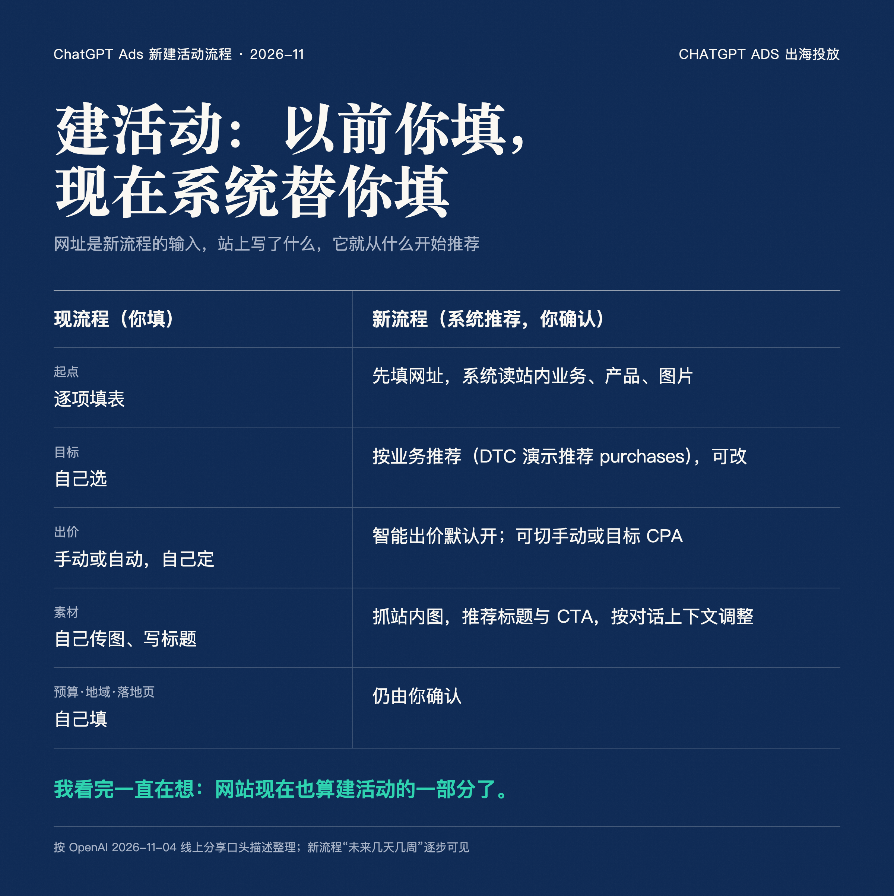

OpenAI 在 11-04 的节日分享里演示了 ChatGPT Ads 新的建活动流程：第一步填网址，系统读完网站先给目标、出价和素材，预算、地域和落地页还是广告主自己确认。我看完最大的感受是网站上什么样，广告就会是什么样，所以这一个月我自己会把时间花在产品页上。
三句话版

这场会我看了两遍。第一遍是抱着看数字去的，看完觉得没什么，就是官方说假日季搜索涨了多少。第二遍我倒回去看中间那段演示，才觉得这事对做出海的人不一样了。它演示的是新建活动：第一屏只让你填一个网址。填完系统去读你的站，读出来你卖什么、卖给谁、图长什么样，然后目标、出价、素材它先替你填上，你最后只确认预算、地区、落地页。
我当时就在想一个事：我们看过那么多独立站，有几个的详情页是跟广告后台对得上的？促销价是上一轮的，主图是上一季的，广告那边另传了一套图，这是常态。以前没事，因为素材是人传的。以后系统直接从站上读，站上什么样，广告就什么样。所以我自己的结论很简单，这一个月别的先放放，产品页弄对。
数字我也看了。节日页上 94% 那个最抓眼，但它是黑五当天对前四周同一天，量的还是搜索。我更看 52%，整个季度都在涨，说明搜索不是黑五那天才起来的。这跟团队说的「现在就上，给系统学习时间」是一个意思。
会的名字叫《Your 2026 ChatGPT Ads Holiday Playbook》，11-04 开的，三十分钟左右。讲的是 OpenAI 广告团队的两个人，做产品市场的 Julie Towns 和做客户成功的 Michael Iselin。开场他们就说，这是 ChatGPT Ads 的第一个假日季。
然后很快抛了一个大数，是转述 Adobe 的预测：今年假日季，美国零售站来自 AI 的引荐流量同比涨 130% 以上。我听到的时候其实没太往心里去。这是 Adobe 的数，算的是所有 AI 平台加起来，不单是 ChatGPT，会上也没说是哪份报告、什么时候出的。我拿它知道这条路是热的就够了，要拿它去估自己账户能涨多少，我是不敢的。
会后我去翻了 OpenAI 给这个假日季做的节日页（ads.openai.com/zh-CN/holiday）。上面的数比会上口头讲的具体，页脚把统计期都写了，全是 OpenAI 自己的数据。每周超过 17 亿条提示词跟零售、电商有关，这是 2026 年 9 月的；购物相关的对话里约 43% 在比较、评估不同选项，统计的是 9-21 到 10-18；2025 年假日季，美国用户在 ChatGPT 上的商品搜索量涨了 52%，拿 11-01 到 12-31 去对 10 月每周的同一天；Cyber Five 那五天平均涨 47%，黑五当天涨 94%，对的是之前四周的同一天。
94% 我第一反应是想截下来放进汇报，想了一下不对。它是黑五一天对前四周同一天，不是整季的平均，量的是搜索，不是成交，跟广告效果更隔着一层。52% 是铺满整个季度的。会上团队说 Cyber Five 之前几周搜索就已经起来了，说的是一回事。他们反复讲「现在就上」，我理解理由主要是给系统留学习时间，不全是催着花钱。
43% 那个我是从有商品目录的卖家那边看的。将近一半的购物对话在比来比去，带价格和评分的商品 feed 广告，本来就是给这种时候用的。
节日页顶上还挂着广告金：第一次投 ChatGPT Ads 的广告主，消费 $500 送 $500，到 12 月 31 日。会上的说法是「符合条件的新广告主」，具体什么条件，我以页面和后台写的为准。
演示用的是一个在自己官网卖咖啡的品牌。第一屏就一个框，填网址。系统读完站里的业务、产品、定位和图片，先给一个目标：因为是直营，它推的是 purchases，想换能换。目标定了，智能出价默认开着；不想全交出去，可以切回手动出价，或者设一个目标 CPA，让平均每次转化成本不超过那条线。
再往下是素材。它直接拿网站上的图，给标题和 CTA 的写法，打开 creative enhancements 之后还会按对话上下文去改写。走到最后一步才轮到人：预算、投放地域、落地页，确认完就能上线。我对着回放字幕又听了一遍团队怎么形容这件事，他们的原话是要「incorporate intelligence by default」。

看到素材那一步，我脑子里就是一些具体的站。详情页挂着上一轮的促销价，主图还是上一季的款，广告后台另配了一套新图。以前这么凑合也能跑，因为素材是人一张张传的，跟网站对不对得上没人管。现在系统从站上读，站上旧，推荐就旧，过期的价格会原样进广告。
所以这个月我自己会回头把产品页过一遍，看的东西不多。关键产品页和落地页能不能被抓取，团队说会把相关的设置文档放在聊天区；描述里有没有讲清楚卖的是什么、给谁用、为什么选它；价格、库存和优惠跟广告是不是同步，节日里这三样变得最快。等新流程出现在后台、推荐出来了，我会拿着产品页再对一遍，主要看两处：目标是不是我真想要的购买，素材里有没有过期的价格。
演示只用了一个英文直营站。会上没说系统碰到多语言、多国家的站，会读哪个版本、按哪个市场给推荐。做出海的站大多是多语种的，这恰好是我最想知道的地方，这个我没看到答案。我自己的打算是等新流程真出现在后台，再拿多语种的站去试，在那之前不会为了它去动站点结构。
假日冲购买，团队推的是转化目标、按展示计费（自动字幕写成 build on impressions，原意是 billed on impressions）。我第一反应是别扭的：做投放的人习惯按点击算账，按展示计费听着像把风险推给广告主。听完理由，我又觉得站得住。按展示计费的转化活动，系统能同时朝点击转化和可见转化去优化。可见转化就是那种人：看到广告没点，去别处接着比，过一会儿自己回来下了单。
团队还给了一个比例：超过一半的合格可见转化，发生在看到广告后的第一个小时内。这是口头说的，没给统计期，分母也只是合格的可见转化，不是全部购买。我从里面读出来的是，只看点击报表会漏掉一批看完很快就买了的人；但这些单是不是都是广告带来的，它说明不了。
团队讲了五条做法。第一条是把网站、转化信号（pixel 或 Conversions API）、商品 feed 这些基础打好；第二条是给系统学习时间，理由是去年 Cyber Five 之前几周商品搜索就抬起来了；第三条是让自动出价、智能素材去干活，新流程也算在这条里；第四条是测、学、调，每 2–3 天看一次；最后一条是 Q5。这些大部分在帮助中心早就有。
新的是两句口头结论。一句是 EQS（事件质量分，1–10 分，每天更新）高的广告主，测得的每次转化成本（CPA）比同行低；另一句是建了商品 feed 活动的广告主，点击率比没建的高。两句都是 OpenAI 自己的分析，没给幅度，我能读出方向，读不出自己的账户能好多少。EQS 也没给及格线，所以我不会去追某个分数，后台给的改进项能补的补上，再谈加预算。有 SKU 的话，feed 用 CSV 就能起步，量大了再换托管 URL 或 SFTP。
每 2–3 天看一次，团队说的是看盘的频率，不是改设置的频率。我自己看的话就看三件事：广告在不在投，投放受限就去查资格、审核状态、活动日期、预算和出价；结果跟预期差多少，偏弱的话看转化设置有没有坏，再看 EQS 和它给的提示；哪里跑得好，跑赢目标的活动慢慢加预算，同时盯着效率。看完没问题我就不动。系统要的是学习时间，隔两天动一次出价，它就一直在追新设置。
今年 Cyber Five 是 11-26（感恩节）到 11-30。Q5 是团队专门拎出来的一段：圣诞之后到 1 月初，大促过去了，但人会为新年目标、新习惯、节后优惠来 ChatGPT 找东西。他们举的例子，咖啡品牌讲一个新的早晨习惯，家居品牌讲怎么让空间在新一年更好用。团队的原话是，不用在 12 月底重建活动，把节中学到的接着用。
我自己接下来的安排大概是这样。产品页这个月过一遍。在投的活动，看一眼目标是不是转化加按展示计费，再去看 view-through 那一列在自己品类里占多少。Q5 的新年、新习惯素材现在做好，12-26 换进现有活动，活动本身不推倒，一重建，前面攒下的学习就得重来。等新流程出现在我的 Ads Manager，我再拿它建一个，让系统先填，我来对。
会上只说未来几天几周逐步可见，没给具体日期；我是以自己 Ads Manager 里出现为准。
不会。系统推荐目标、出价和素材，预算、地域、落地页还是自己确认；目标能改，出价能切回手动或目标 CPA。
不是。分母是合格的可见转化，不是全部购买；这个比例是会上口头给的，没说统计期。
2025 年黑五当天，美国用户在 ChatGPT 上的商品搜索量比此前四周同一天高 94%；Cyber Five 五天平均高 47%。量的是搜索，不是成交，也不是广告效果。
12-26 起到 1 月初。团队的说法是把节中学到的接着用，不在 12 月底重建活动。
Stan Lu · ChatGPT Ads 出海投放。栏目：ChatGPT Ads 更新解读。
上一篇：每周表现邮件与 Conversions 总览 · English
发布 2026-11-12 · 最后更新：2026-11-12